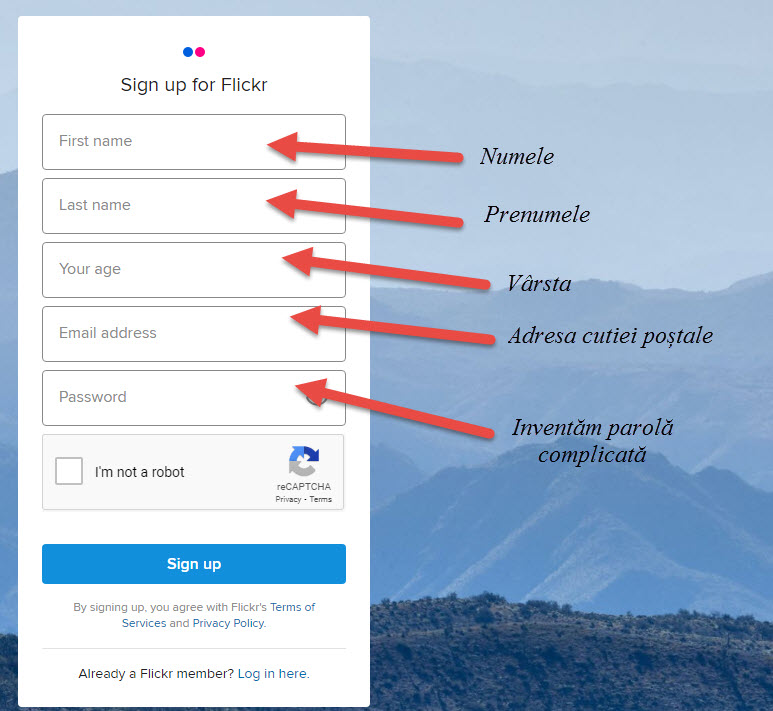

Urmăm pașii:
1) Intrăm pe adresa https://identity.flickr.com/sign-up, completăm casetele
2) Ne logăm cu datele personale https://identity.flickr.com/
3) Încărcăm poza apăsînd butonul upload (fig.3 ) și alegem fotografia de pe calculator sau folosim metoda Drag&Drop pentru a muta fotografia în fereastra încărcării
4) Ne va apărea poza în rubrica photostream
5) Pentru editare apăsăm butonul Edit Photo Info care are forma unui creion, aici putem adăuga o descriere și să schimbăm forma de acces, în mod implicit accesul este public, toți utilizatorii pot vedea fotografia.
7) Distribuirea fotografiei în mediul online se face cu ajutorul butonului Share Linkul obținut: https://www.flickr.com/photos/69721214@N06/shares/100X8n2gKs îl putem distribui pe orice altă platformă care lipsește în meniul flickr
500px (pronunțat „cinci sute de pixeli”) este o platformă globală de partajare a fotografiilor online, care este o subsidiară a Visual China Group. Are sediul în Toronto, Canada. A fost co-fondat de Oleg Gutsol și Evgeny Cebotarev la 31 octombrie 2009.
500px are un algoritm pentru a evalua fotografiile încărcate recent, care ia în considerare vizionările, aprecierile și comentariile și are ca rezultat evaluarea unei fotografii sau „Puls”. Cu cât Pulse este mai mare, cu atât este mai probabil ca o fotografie să ajungă pe pagina Populară a site-ului, oferindu-i o șansă mai mare de a fi văzută de alți utilizatori.
Crearea contului, încărcarea și distribuirea imaginii pe 500px
Urmăm pașii:
1)Avem posibilitatea să ne logăm cu conturile existente Apple, Google sau Facebook
2) Încărcarea pozelor este identică ca în pasul 3 de la serviciul Flickr
3) Gestiunea pozelor este asemenea serviciului Flickr
4) Click în cornul drept de sus al fotografiei încărcate o va deschide în filă nouă și ne va oferi caracteristicile ei cum ar fi aparatul de fotografiat și obiectivul folosit iar inteligența artificială ne va sugera ce este în poză